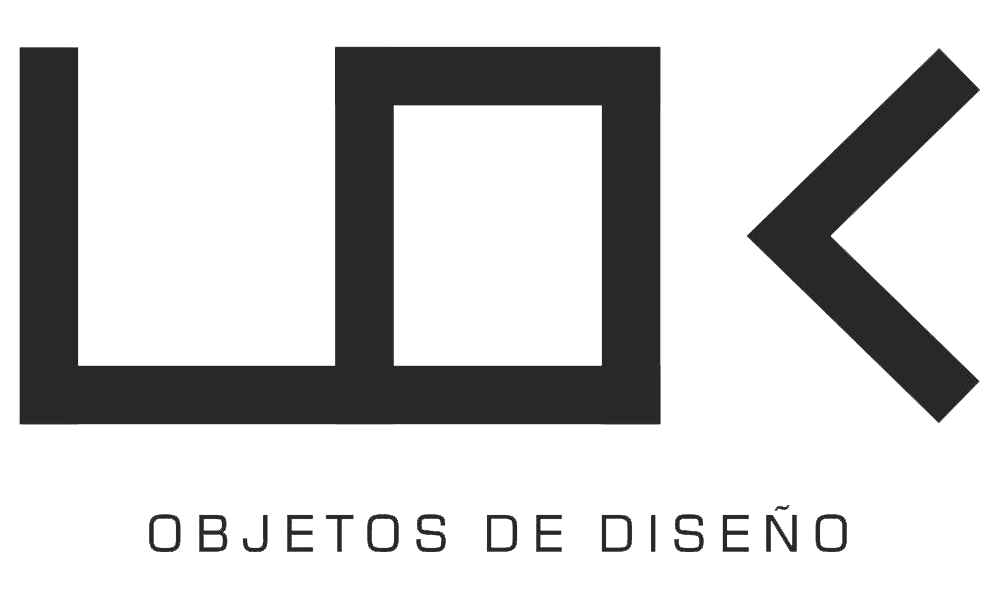

<mat-toolbar class="header" color="primary">
  <div class="header__search">
    <input class="header__search--input" type="text" placeholder="Buscar" />
    <button class="header__search--btn">
      <mat-icon> search </mat-icon>
    </button>
  </div>

  <div class="header__logo">
    <a routerLink="">
      
    </a>
  </div>

  <div class="header__navbar">
    <nav>
      <a mat-button *ngFor="let link of links" routerLink="{{ link.path }}">
        <mat-icon *ngIf="link.isIcon; else text"> {{ link.desc }}</mat-icon>
        <ng-template #text>{{ link.desc }}</ng-template>
      </a>
    </nav>
  </div>

  <!-- <button
    (click)="toggleMenu()"
    id="menuBtn"
    class="header__menuBtn"
    opened="opened"
  >
    <mat-icon>menu</mat-icon>
  </button> -->
</mat-toolbar>
